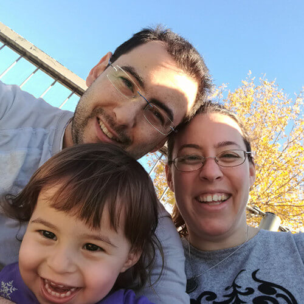

A bit about myself
Hi! I'm Itai Bar-Haim.
I'm a software engineer and architect with 25 years of experience building resilient, cost-effective, and maintainable systems — from deep client-side UI to scalable backend infrastructure and developer-facing tools.
My career began in 2001 writing tactical C4I user interfaces for the Israeli Navy (X/Motif, GTK+, C/C++, and Gtk# over Mono), where reliability and handling edge cases were non-negotiable. Working in UI at the lowest levels gave me a deep understanding of thread management, performance, responsiveness, and memory/handle management — which made transitioning into backend and full-stack architecture a natural fit.
I'm a fast, self-taught learner with a "Get-Things-Done-Right" mindset: I get things done, but always with clean architecture that leaves room for future growth and adaptation. If I need a technology I'm not familiar with, I learn it on the fly by building with it.
I am currently exploring new opportunities in Backend and Full-Stack development, especially where solving deep architectural puzzles or modernizing legacy systems can make a real impact. Feel free to reach out at itaibh@gmail.com.
Experience
-
Applitools
Spearheaded a core server migration from .NET Framework to .NET 6+ on Linux, cutting server costs by $40,000 and boosting performance. Re-architected a heavy component into a multi-process model, replaced legacy Windows-only
System.Drawing.Bitmapwith 100% backward API compatibility, unified the C# SDK across 6 OS/CPU native runtimes on NuGet, and owned/revamped the Figma and Azure DevOps (ADO) plugins. -
PicScout
Full-stack web development using ASP.NET on the server side with Angular and Knockout.js on the client side, plus Selenium-based web UI test automation.
-
Overwolf
Enhanced the WPF client, integrated Chromium Embedded Framework (CEF) for web-based apps, built web-facing C# APIs, and automated builds, tests, and API documentation generation.
-
mPrest
Led the UI team and built client-side architecture and GIS/3D interfaces (WinForms, WPF) for mission-critical C4I systems, most notably the Iron Dome and Ituran.
-
Israeli Navy C4I
Built tactical client-side C4I systems using X/Motif and GTK+ in C/C++, and Gtk# over Mono.
Projects
- NBidi, an open-source .NET implementation of the Unicode BIDI (Bi-Directional Text) algorithm.
- WebQuestEngine, Point and Click Quest Game Engine for Web.
- Blender Rotoscope, interactive video matte generation through an external AI worker.
- Mobile Puzzle Games, including Symmetry6 and FlipMosaic.

Some links
- My Blog, where I write mostly about technology and share my thoughts.
- My GitHub page
- My Stack-Overflow profile page
- My Linked-in profile page
- My old SourceForge page
- Stop-Motion Animation (@roguesunfiltered) – YouTube, TikTok, Instagram

Presentations and Publications
- Efficient Web Page Authoring - a presentation I passed to my colleagues at PicScout to improve their understanding of web-related concepts and how to do things better.
- Web Development for Beginners - a presentation aiming to teach the basics of web development to people with basic programming background. Was done as part of a volunteering project in PicScout.
- My post about Jasmine JavaScript Unit Testing Framework in the PicScout engineering blog.

Personal Life
Married to Nadin and father to Ella and Gali.
When I have time I like (surprise surprise!) programming (my own projects and mobile puzzle games), creating stop-motion animations frame by frame (check out @roguesunfiltered on YouTube, TikTok, and Instagram), going to Escape Rooms with my wife or with friends, and when I have a good quest game I like solving it.